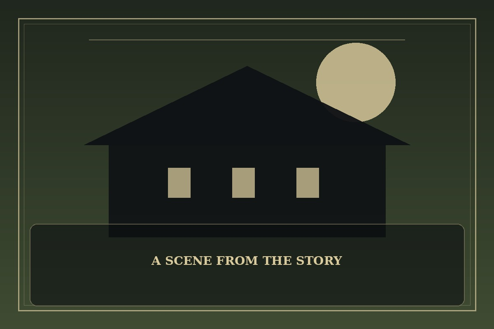

Tower of God
Synopsis
A determined climber enters a mysterious tower where every floor has its own rules, alliances, and trials. The higher the climb, the more complicated friendship and ambition become.
Chapter 1: The First Door
The tower’s entrance opened without a sound. Beyond it waited a hall so tall its ceiling disappeared into mist, with a single door at the far end and dozens of strangers pretending not to be afraid.
A silver-haired examiner explained that the first test was simple: reach the door before the sand in a glass ran out. Then the floor shifted, dividing the crowd into separate paths. Some ran alone, others formed quick alliances, and a few watched carefully before moving.
Nara offered her hand to a boy trapped beneath a fallen panel. Helping him cost her precious seconds, but together they noticed that the door responded to cooperation rather than speed. As it opened, she understood that the tower would measure more than how badly she wanted to reach the top.

This fan-made sample is an original piece created for a student website project; it is not an official chapter of Tower of God.